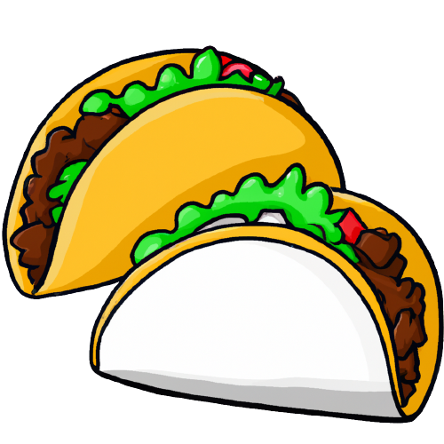
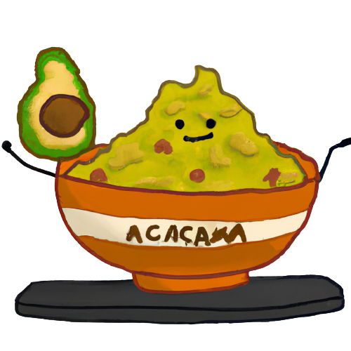
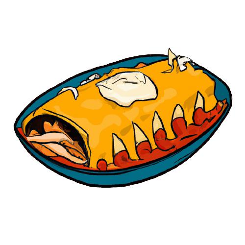
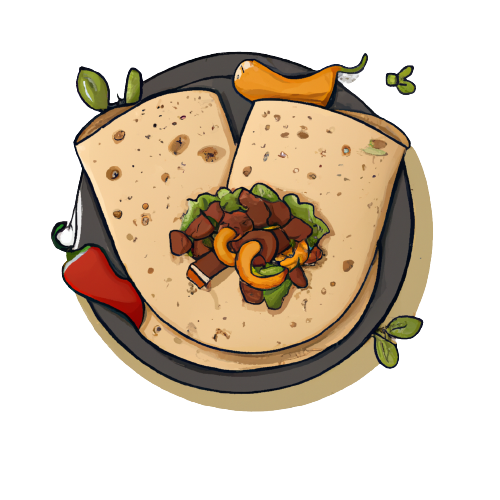

Найпопулярніші страви Мексиканської кухні
-
Тако
Тако - це мексиканська національна страва, яка складається з м'яса (зазвичай свинини або говядини), запеченого в спеціях, і подається в коржиках з тортильї (тонких листків пшеничного тіста). Його можна прикрасити соусами, сиром, овочами та іншими приправами. Найпопулярніші начинки для тако - це м'ясо (зазвичай яловичина або свинина), овочі, соуси та спеції. Начинку можна доповнити такими інгредієнтами, як сир, гуакамоле, маринована цибуля, смажена кукурудза, кетчуп, гірчиця і т.д.
Всі ці інгредієнти додаються до тортильї за смаком і насолоду людини, яка її споживає. Існують різні види тако: м'ясні, рибні, овочеві, грибні та інші. Також можна вибрати різні види тортильї - білу, жовту, зелену, червону та інші.
Дивитись рецепт -
Гуакамоле
Гуакамоле - це дип з дуже простих інгредієнтів: авокадо, помідори, цибуля, часник, лайм та сіль. Він має свіжий, багатий смак та зазвичай подається з чіпсами або тортильями. Основою гуакамоле є авокадо, яке змішується з різними інгредієнтами, такими як помідори, цибуля, чилі, лаймовий сік, коріандр, сіль та перець. Рецепти можуть відрізнятися в залежності від регіону і власних уподобань, але авокадо залишається головною складовою і додає неповторний смак та текстуру соусу.
Гуакамоле містить багато корисних речовин, таких як здорові жири, білки, вітамін С, К, Е та важливі мінерали, такі як калій та магній. Авокадо є джерелом мононенасичених жирів, які підтримують здоров'я серця та мозку, а також поліфенолів, які є потужними антиоксидантами.
Дивитись рецепт -
Кесадильяс
Кесадильяс (Quesadillas) - це схожа на такос страва, але замість тортильї використовується злегка зажарена тортилья з сиром, м'ясом, овочами та іншими інгредієнтами всередині.
Кесадильяс є популярною стравою в багатьох ресторанах та кафе, а також може бути легко приготована вдома з декількох простих інгредієнтів. Вона є ситною та смачною стравою, яку можна вживати як головну страву або як додаток до інших мексиканських страв.
Дивитись рецепт -
Чіллі кон карне
Чіллі кон карне (Chili con carne) - це страва з маринованої яловичини, кукурудзи, фасолі, помідорів та інших овочів, яку подають з рисом або тортильєю.
Що стосується смаку, то чілі кон карне має гострий, але в той же час досить теплий смак. Перець чилі додає смаку та гостроти, а квасоля додає щільності та текстури. Чілі кон карне можна подавати з різноманітними додатками, такими як сметана, тертий сир, крутони або рис.
Дивитись рецепт -
Енчілада
Енчілада (Enchilada) - це страва з тортильї, яка начинена маринованою свининою, куркою або яловичиною, запечена з сиром та соусом на основі помідорів, перцю та спецій.
Смак енчілада може бути досить різноманітним, залежно від використаних інгредієнтів та соусу. Вони можуть бути гострими або не дуже гострими, м'ясними або овочевими, з тертим сиром або без нього. У кожного регіону Мексики можуть бути свої унікальні рецепти енчілада, які можуть відрізнятися за смаком, текстурою та способом приготування.
Дивитись рецепт -
Фаджитас
Фаджитас (Fajitas) - це популярна мексиканська страва, яка складається з кусочків маринованого м'яса (зазвичай курки, говядина або свинина), які обсмажують на грилі або у сковороді разом з різноманітними овочами (перець, цибуля, помідори, тощо). Після того, як м'ясо і овочі готові, їх подають разом з тортільями, сиром, гуакамоле, соусами та іншими додатками на вибір.
Історія страви починається в Мексиці, де вона виникла серед господинь, які використовували залишки м'яса для приготування смачних страв. Однак, популярність Фаджитас зросла в Сполучених Штатах, де страву відкрили для широкої публіки в ресторані "Ninfa's" в Х'юстоні в 1970-х роках. З того часу Фаджитас стали дуже популярною стравою в мексиканських та техаських ресторанах в усьому світі.
Дивитись рецепт